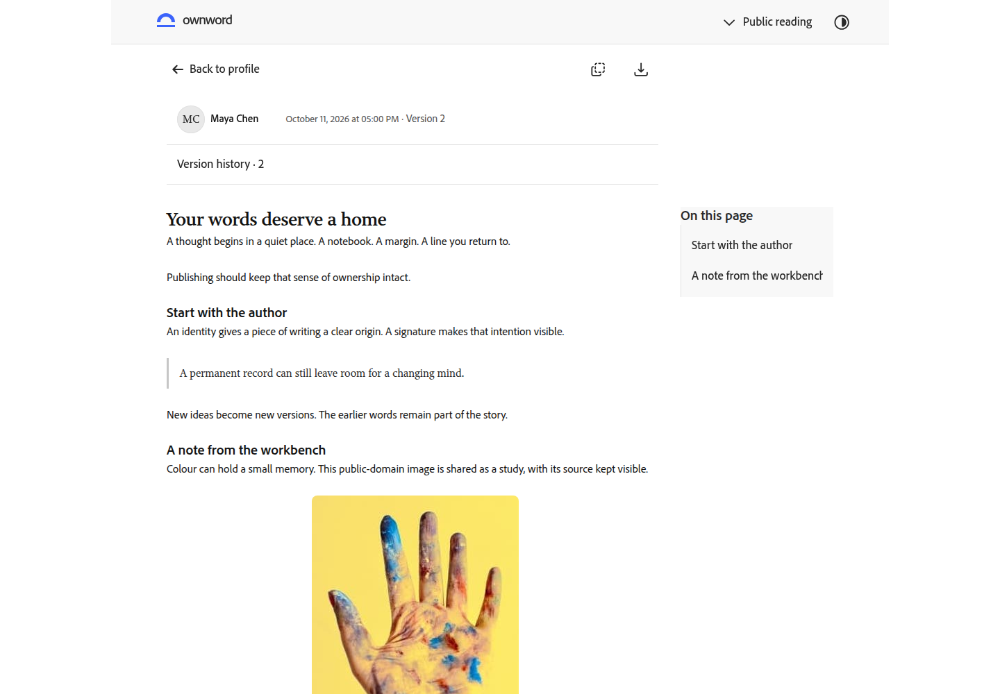
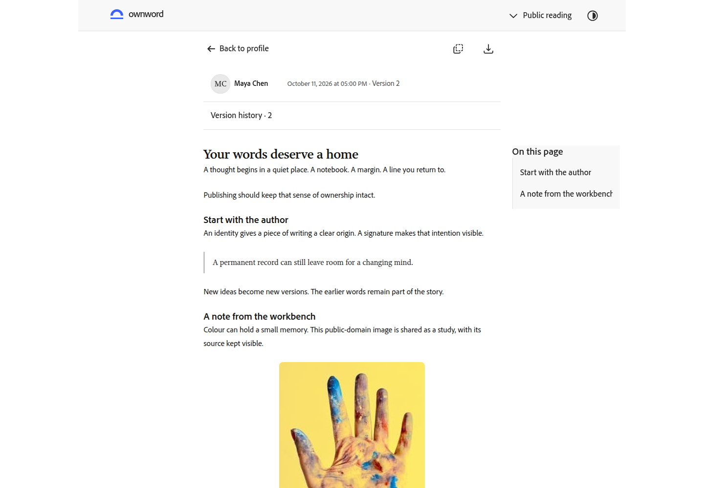
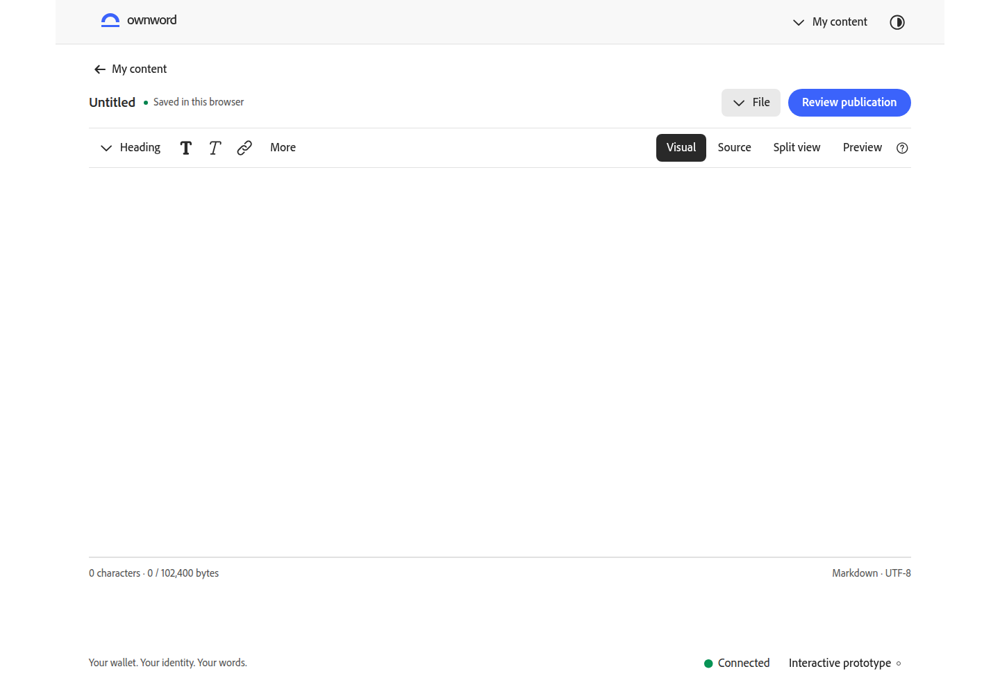
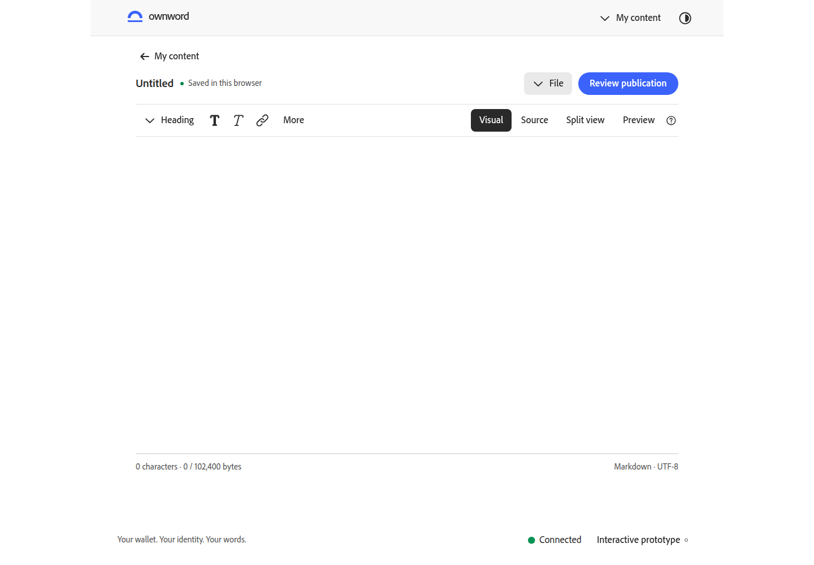
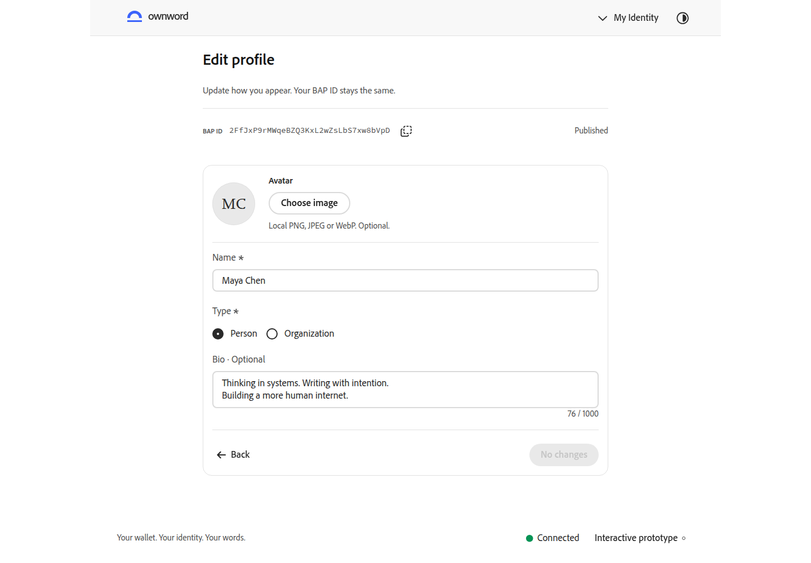
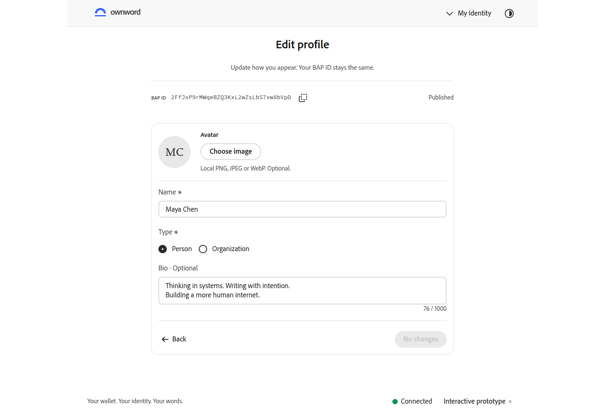
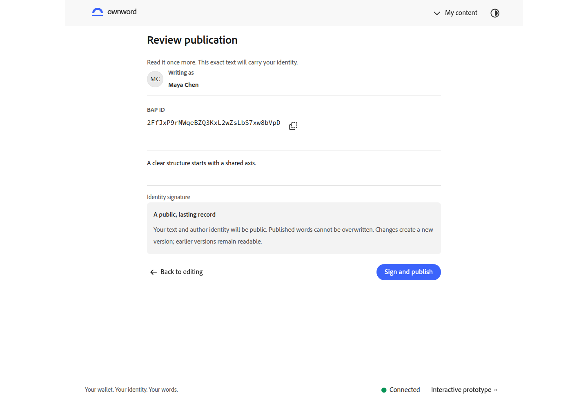
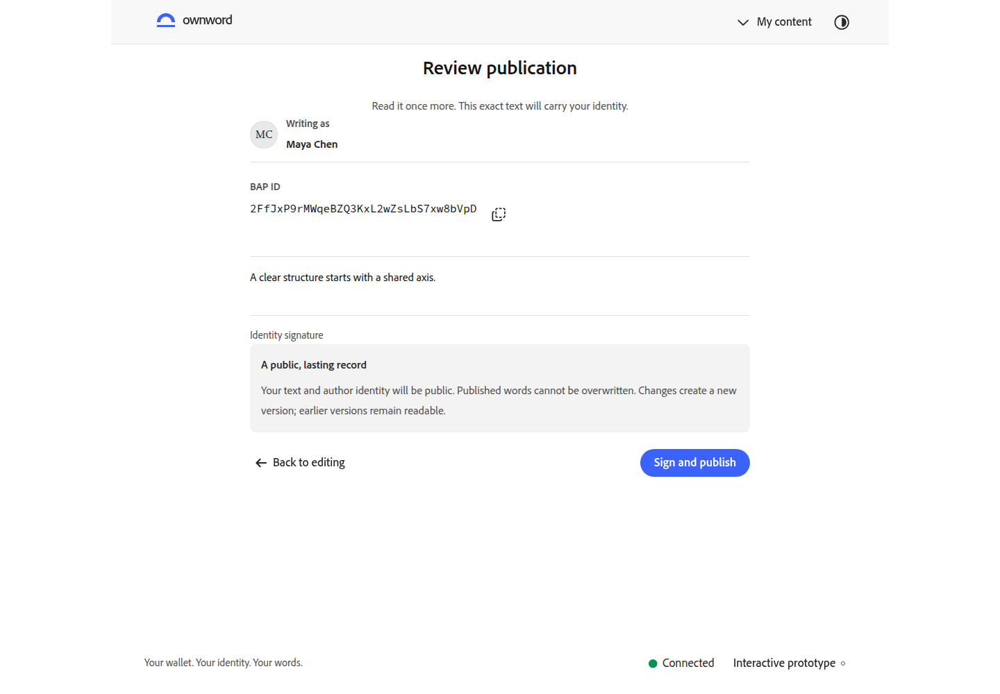
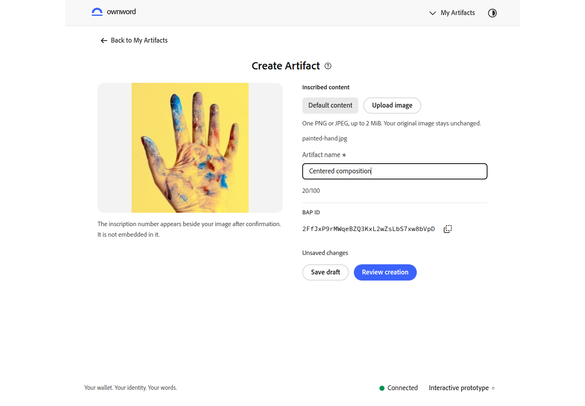

页面中轴与比例
统一主要内容的居中轴与页头边界，让单栏、任务表单和阅读正文形成稳定秩序；正文与字段保留左对齐。只调整 OwnWord 页面布局，沿用官方 Spectrum S2 组件、字体与图标。
前后使用同一数据、英文浅色、1440 × 1000 浏览器视口，等待字体加载；优化前基线 b3e6ef1。点击截图查看原尺寸。
阅读页：正文与页头共用中轴
之前外框居中，但目录将正文挤到左侧，正文中点偏离页面中轴 122px。现在正文与阅读页头共同居中，目录保留 220px 侧栏；正文宽度结合阅读行长与窗口空间收敛。


编辑器：稳定页头与单栏比例
单栏编辑区由 1184px 收敛至 960px，与内容列表呼应；全局页头从 1280px 回到统一的 1120px。双栏模式保留 1184px 写作空间，页面中轴保持一致。


身份任务：标题居中、字段对齐
标题与说明围绕任务表单中轴组织，字段、标识与操作仍按阅读顺序左对齐。


内容确认：明确共同的任务中轴
标题与说明在 720px 任务区域内居中，作者、正文、影响说明和确认操作保持清晰的纵向关系。


Artifact 创建：标题组居中、两栏平衡
将标题和帮助按钮作为一个整体居中，左右两栏等宽，预览与表单各有明确位置；图像比例和输入字段保持原有行为。

本轮检查
初查 12 个页面状态，修改后覆盖相关页面，并定向检查 1440px、1200px、1024px、320px 及中文深色。主要内容中轴、稳定页头、编辑器模式切换、帮助按钮、未保存保护和目录键盘跳转均有实际浏览器记录。
构建来源与模型检查通过。自动无障碍检查未发现违规；中文深色记录保留 1 项需人工核对的 incomplete，不计为自动通过。原始布局诊断和测试时序记录保留，用户视觉复核待确认。